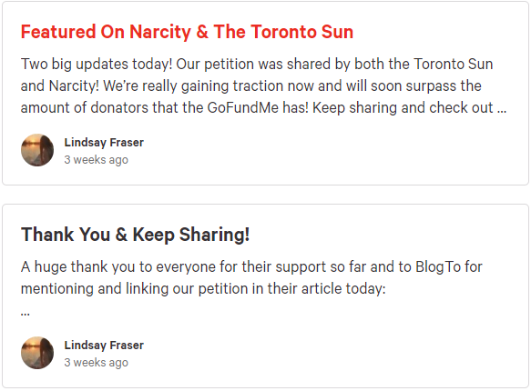

Petition to Stop Adam Skelly's GoFundMe
December 21st, 2020
Wow, just when you thought that Shitlibs couldn't get any worse, they totally outdo themselves.
Change.org
TDC_ARTICLE_START
If you have been following the news you have most likely heard of this self-righteous bro who owns a bbq joint in Etobicoke that is going against the provincial government’s mandates to protect the people. Whether you agree with these mandates or not, he is putting the lives of others at risk and selfishly breaking the law in order to gain fame and attention. This has led to him being arrested and charged, as well as tax payers money being wasted in the fight against his nonsense.
TDC_ARTICLE_STOP
Adam Skelly being arrested
Yeah I'm sure that Lindsay Fraser, on the short list for pettiest bitch on the internet, is really concerned with taxpayer money being wasted when the cops have to arrest Jequeerus for committing crimes, or shutting down an illegal BLM looting operation. I almost cannot imagine the righteous indignation that this fills catlady in training Lindsay Fraser to see taxpayer funds misallocated like that.

I know I just used this meme, but I like it.
TDC_ARTICLE_START
Now a third party (who does not know this man) has gotten involved and set up a GoFundMe to raise money for him so that he can fight the charges against him - which is nearing a quarter of a million dollars!
This is not right and I am asking GoFundMe to reevaluate what it’s platform should and should not be used for and to remove this so called “fundraiser" immediately. It’s setting a bad precedent for others, and giving money to a “rich kid” instead of to people and small businesses who actually need it.
He has made decisions in which he knew there would be consequences - and he should pay for them himself!
TDC_ARTICLE_STOP
This was all I could find of Lindsay Fraser, who is apparently a complete nobody. I honestly don't know what's sadder, that she's doing this at all, or that this is the pinnacle of her internet posting career. Imagine for a second that you were doing something as evil yet also gay as trying to stop a man from being able to legally fight the governments bullshit laws, by getting randoms on the internet to sign a petition. Then imagine this was the most important thing you ever did with your life.
And if I can't find a picture of someone on the internet, I think I'm just going to use this pic from now on. So think of this as you read the rest of this polemic.

Lindsay Fraser, Artists Interpretation
TDC_ARTICLE_START
It is important to also note that this guy is not the “small business working-class hero” that he is trying to portray himself as. He is a white privileged anti-masker conspiracy theorist who comes from money and is known in Toronto for being an “attention seeker”. Earlier this year he was called out by the media after he had a public meltdown on Twitter over the Covid-19 pandemic and repeatedly referred to others as the R word.
TDC_ARTICLE_STOP

The R Word!
Oh my fucking god LOL. "The R Word". He used the goddamn R word. What a madman! Wait, what's the R word again?
Oh right, retard. So basically Adam Skelly called a bunch of faggots retards online, and I am in no-homo love with him.
Reminds me a lot of Barry Neufeld's use of the dreaded "R Word" right here in Chilliwack.
Oh and then "white privileged anti-masker conspiracy theorist".
TDC_ARTICLE_START
Please help by signing this petition to let GoFundMe know that you are not ok with this behaviour and that their platform should suspend this fundraiser immediately.
TDC_ARTICLE_STOP
That's the end, but it gets better. Here is the very last update.
Lindsay Fraser Update
That's a lotta exclamation marks goyim! She seems really excited! I wonder what has her so excited!
Seriously, this is the millenial version of Boomers hitting the CAPS lock on their keyboard and just shouting at you online. Very low class behaviour Lindsay. I am NOT proud of you!
And I'm a little torn between using the image of the hideous girl from above, with the catlady-in-training that I wrote about a few days ago. The article on the McGill Student Staff, where we found the treasure below.
Reminder: her self-described passions are "my cat, ice cream, and thinking about New Jersey."
So I think this is what I'll imagine Lindsay Fraser looks like.